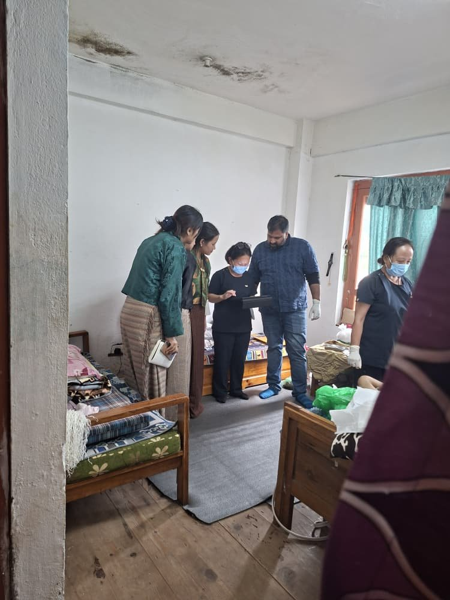

A story
Loneliness

What I learned about Loneliness during a home visit
I went with my team and a palliative-care nurse to visit a patient at their home. Before the visit, I thought we were mainly going there to understand the patient's condition and provide whatever support was needed. I knew that palliative care was about helping patients manage their illness and maintain comfort, but I did not fully understand the emotional side of care.
When we arrived, the environment was very different from a hospital. It was quiet and familiar—the patient's own home, surrounded by the things they had lived with for years. The palliative-care nurse spoke with the patient and assessed their condition while we observed and listened.
As the visit continued, I started noticing things beyond the patient's physical condition. There was a sense of loneliness that was difficult to describe. The patient wanted to talk. They shared their thoughts and experiences, and I realized that sometimes what a patient needs most is not another medical procedure, but someone who is willing to sit beside them and listen.
Being there with my team and the nurse made me realize that loneliness can be very silent. A person may have a family, a home, and people around them, but they can still feel emotionally isolated, especially when they are living with a serious or long-term illness.
What stayed with me after the visit was how meaningful our presence seemed to be. We did not have to do anything extraordinary. We listened, talked, and spent time with the patient. For us, it may have been one visit, but for the patient, having people come to their home and genuinely care about them could mean much more.
That experience changed the way I think about healthcare. "Healthcare is not only about treating the illness, it is also about caring for the person".
It made me think about how technology could support this kind of care in Bhutan. Through Druk Help technology could help patients stay connected with their families, caregivers, and healthcare workers between home visits. Regular check-ins, video calls, reminders, emotional wellbeing support, and communication with care teams could help patients feel that they are not forgotten.
However, technology should not replace human connection. Instead, it should help us make that connection stronger.
That home visit taught me something simple but powerful:
"Sometimes, the greatest care we can give someone is to make them feel that they are not alone".